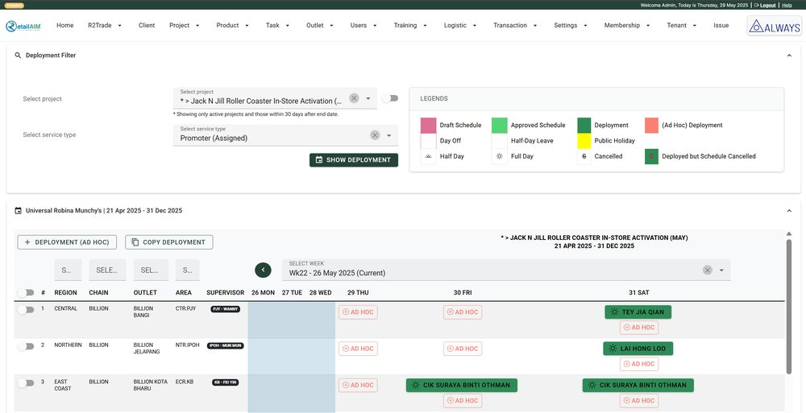
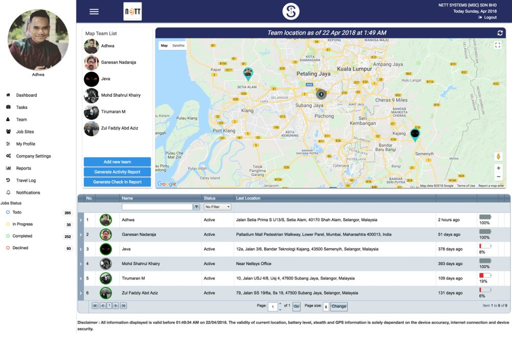
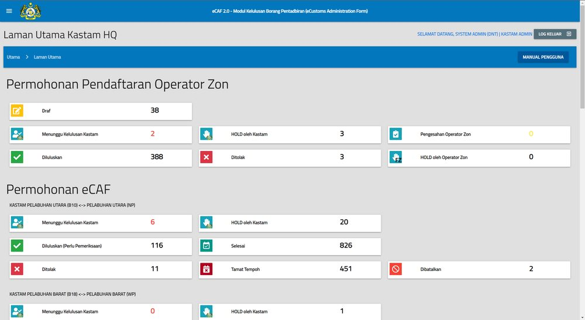

The journey, 2010 to today
Sixteen years, one line of travel, and every stop still running somewhere.

AIM Systems, product
RetailAIM® Plus
Multi-tenant field-force and retail execution SaaS, four countries live.

TRM Nett, product
Service 73
Real-time GPS team management, published to both app stores.

Royal Malaysian Customs
Kastam eCAF
Customs application forms for licensed manufacturing warehouses.